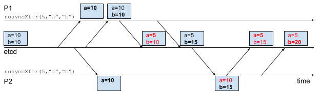

基于etcd3的访问序列化及分布式软事务内存
1 | 文章作者:lday |
本文翻译自Serializability and Distributed Software Transactional Memory with etcd3
新的etcd3 API引入了新的更加强大的原语，相比较于etcd2的限制，这些新的原语充分利用了系统的能力。作为评估etcd3性能的一部分，我们花费了很大力气来使用新的API开发分布式的并发算法。
etcd3的访问序列化要优于etcd2的隔离模型。当应用更新若干个相关的key时，通常需要这些更新要么全部成功，要么全部失败，进而维持应用程序数据的一致性。在实际应用中，etcd3的事务操作和它的多修订版本数据存储给予了etcd一种用于表达原子性的方式，这种原子性基于对多次修订的序列化。在etcd2上，每一个key的更新是独立提交到数据存储上的；这样就无法做到整个提交的原子性。为了评判etcd3的原语是否正确以及性能情况，我们实现了通用的分布式同步控制“食谱”，并进行了基准测试。
这篇文章关注于etcd3新的最小事务接口所提供的原子性。我们将涵盖etcd3的事务，并且演示通过事务来实现原子更新。接着，我们将通过概要介绍一个简单的客户端侧软事务实现来展示etcd的修订元数据如何自然的映射到软事务内存（STM）上。最后，我们将说明这种软事务内存实现是分布式共享锁的一种高性能替代。
序列化（访问序列化）
像etcd这类分布式一致性系统时常要处理非常多的来自不同并发客户端的并发请求。尽管有众多并发的读和写，原子性依然能够保证在每一次数据修订时数据模型是一致的。有很多文献讨论过各种方式来实现，或者是说明如何在分布式系统中做到原子性。etcd3的API支持了很多典型的模式。
对于整个key-value存储而言，序列化给整个过程构建了一个时间轴上的点。一组序列化后的读操作将无法观测到自首次读取之后的所有新的写操作（译者注：这里的意思是一组序列化后的对同一个key的读操作，首次读取其值value之后，后续的读都是读到首次读取时的value，后续有写操作更改了这个key的值，这组序列化的读，仍然是读到更改之前的value）；所有的读像是从同一个快照上获取的数据。序列化一组写将在一个时间点上要么发布一个完整的所有写操作的更新，要么一个更新都没有。部分更新将不会出现，从而不会破坏整个应用程序的状态。
然我们通过一个示例来说明原子性对于避免错乱数据的重要性。下面的代码将从一个账户转移一定数量的资金到另外一个账户：
1 | import ( |
（译者注：原文示例代码有诸多小bug，无法编译执行，翻译稿根据实际接口对代码进行了调整，可正常执行）
虽然整个示例代码非常的直观，但在并发访问时，给定一个不适当的导致冲突的访问顺序，并发的处理还是会破坏整个应用的状态。下图显示了一个导致冲突的时间顺序，两个并发的处理进程P1和P2分别基于公用etcd服务执行nosyncXfer。每一个方框表示了进程在收到一个消息后（用一个带箭头的线条表示）认为的当前etcd的键值数据状态。例如，进程P2在P1发起更新”a”和”b”之前，收到了”a”（粗体），进而导致P2多记录了不一致的a值（红色），并将其写回到etcd中

大多数系统在处理示例代码中所需的原子性时，要么是借助于分布式共享锁，要么是基于事务工具。最终的，一些机制都会强制要求以原子的方式访问这一组key，同时还保持容错并避免在竞争争用下的性能下降。对于etcd3而言，这个原子性机制就是事务。
etcd3事务
etcd3向etcd API中引入了事务用于原子性的更新一组key。一个etcd3事务是一个元语操作，他由归属于事务块中的Get、Put和Delete操作构成，并在etcd存储上受到事务保护。基于事务元语，使得构建各种复杂的并发控制算法成为可能。例如，etcd事务能够清晰的支持客户端软件事务内存(STM)
事务元语
一个etcd事务是一个编码在etcd协议中的元语。这个元语使得客户端能在单次数据修订中提交对多个key的操作，整个操作单元在etcd上是序列化的。除了批量操作外，事务性也被保持；一个事务基于etcd存储上的状态条件来控制哪些操作将被提交。
一个etcd事务的结构如下所示：
Txn().If(cond1, cond2, ...).Then(op1, op2, ...,).Else(op1’, op2’, …)
一个事务由3个组成部分：条件块；成功块；失败块。首先是条件块，例如上面的If(cond1, cond2, …),如果所有的条件（例如，cond1, cond2, …)都为真，那么整个事务被认为成功，如果其中任何一个条件为假，则事务被视为失败。成功块，例如上面的Then(op1, op2, …)，当事务被认为成功时，将在单次数据修订中应用其中的所有操作（例如，op1, op2, …)。失败块，例如上面的Else(op1’, op2’, …)，当事务被视为失败时，将在一次版本修订中应用其中的所有操作（例如，op1, op2, …)
条件块是多个条件的连接组合。每一个条件针对一个key有一个比较目标（值，创建的修订版本，修改的修订版本或者版本）和一个比较操作（<, =, >）。nosyncXfer示例中的问题，是覆盖了一个已经被取代（修改过的）key，这个是可以避免的，可以通过如果key的修改的修订版本和之前获取的修订版本不一致，则整个更新失败来保证。
下面是示例代码，通过事务来保证安全的更新：
1 | func txnXfer(etcd *clientv3.Client, from, to string, amount uint64) error { |
这段代码是基于原始版本的一点改进。所有的Get请求在一个事务中，在获取from和to时，期间的写操作不会对其产生影响。类似的，所有的Put请求也在一个事务中，进而确保from和to在最近被获取后，没有被修改过。下图是一个冲突过程的演示，原本会破坏数据一致性，但现在会接收一个事务，而另一个事务会失败并且重试

软件事务内存（STM）
通过事务重写的示例解决了数据一致性遭到破坏的问题，但是代码有很多不足之处。代码有些不够自然；在前头读取数据时的手动事务提交，跟踪修订版本，以及显示重试对一个样板模式而言，都显得太笨拙。理想情况下，安全的数据处理就像和普通的被隔离的内存数据处理一样直观。
在由修改修订版本保护的事务中打包各种访问是对软件事务内存(STM)的硬编码。就像被修改修订版本保护的事务那样，STM系统会检测内存访问冲突，进而恢复，安全的回滚任何修改。在一个乐观的STM系统中，事务上下文会记录所有的读操作，并分别缓存读集和写集的所有写操作。在提交事务时，系统会校验任何读冲突（参见下面的示例）。一个无冲突的事务会将所有写操作集合写回内存。如果有冲突，则会重试，或者终止事务。

为了演示STM的重试过程，上面的图重新展示了通过STM解决P1和P2冲突的过程。像之前一样，P1在P2收到”a”和”b”之间更新了”a”和”b”。P1的更新增加了key的修改修订版本至{a:2, b:2}当P2尝试通过STM提交事务时，老的读获取的”a”的修订版本信息（1）与当前的修订版本信息（2）冲突，导致服务器拒绝本次提交。P2的事务接着重试，重新获取读信息，重新应用事务，并最终无冲突的提交事务。
下面是通过etcd3的STM客户端重写的示例代码：
1 | import conc "github.com/coreos/etcd/clientv3/concurrency" |
利用STM的版本更加简单：将一个函数交给STM运行时，由这个函数来处理细节。这样错误处理更少；STM层会自动捕获etcd错误并终止事务。事务示例中的重试循环也不见了，因为STM系统会自动进行重试。作用域也更为简单；事务可以通过在事务函数中返回错误码或者通过取消事务内存上下文的方式终止（例如， context.TODO())。最终，各种繁琐记账行为将更少：比较修订版本数据和构建事务都由STM的客户端代码负责完成了。
实现STM
etcd3的软件事务内存(STM)是基于v3 API的原语实现的。为了展示使用etcd3的STM协议的机制，我们将在70行的Go代码上概述一个简单的可重复读取的乐观STM算法。这个实现包括了一个STM的一些通用特性，例如事务读操作集、写操作集管理，数据访问，提交，重试和中断。
STM系统有很多值得期待的特性。首先，事务必须是原子的；一次提交要么全部成功，要么全部不成功。第二，事务必须至少具备可重复的读隔离（完全序列化，所有读都是在同一个修订版本上，针对于我们的示例代码无关紧要）。第三，他必须能保持一致性；提交能够检测到数据的冲突，并能进行重试，解决冲突。
事务循环
STM的处理过程由他的事务循环来控制：
1 | func NewSTM(ctx context.Context, c *v3.Client, apply func(*STM) error) <-chan error { |
事务循环管理STM事务的整个生命周期。一个新的事务启动一个事务循环，并且这个调用将返回一个future用于通知循环的结束。循环创建新的簿记数据结构，运行用户提供的apply函数来访问一些key，之后提交事务。如果STM的运行时无法访问etcd（例如，网络故障）或者context被取消，它将使用Go的panic/recover来取消事务。如果有冲突，循环将重复执行，通过一个新的事务来重试。
读操作集和写操作集
下面的结构描述了整个STM事务的上下文(context):
1 | type STM struct { |
一个STM事务上下文追踪运行的事务的状态。他保留了一个客户端引用从而可通过事务中的Get和Put请求来获取数据。这些Get和Put请求来自于提交阶段冲突检测过程中的读操作集（rset）和写操作集（wset）。用户同样可取消这个事务，通过对上下文执行取消操作即可。
Get和Put
STM的Get和Put方法会检测和缓存etcd上key的访问：
1 | type stmError struct { err error} |
Get和Put跟踪由事务管理的数据。对于Put方法，key的值存储在写操作集中，延迟实际的更新，直到事务提交的时候才执行。对于Get方法，key的值是基于他最新能观察到的值：如果在写操作集上被覆写，则值来自写操作集；如果已经缓存了，则来自读操作集，或者如果两者都没有，则强制来自etcd。所有来自etcd的强制读取都将更新读操作集，从而做到可重复读取的隔离，并且会在冲突解决阶段跟踪key的修订版本信息。
提交
当apply函数完成后，所有修改将通过事务提交回etcd：
1 | func (s *STM) commit() bool { |
这个提交事务是基于读操作集和写操作集来构建的。为了检测冲突，事务由所有读操作集的修改修订版本保护；如果有任何一个key被更新了，事务将会失败。如果没有检测到冲突，事务将把写操作集的数据写到etcd，并最终成功。
基于etcd的STM性能
这一章评估基于etcd的STM的性能。如果STM符合预期的工作，其示例代码的请求吞吐量应该与key的数量成正比。相反，分布式锁的请求吞吐量是保持稳定的。接着，通过比较可重复读隔离策略与序列化隔离策略，我们深入的看一看STM隔离策略对吞吐量的影响
上图显示了对示例代码建模的基准测试结果，使用了etcd3的基准测试工具”stm”命令。与预期相符，锁的吞吐量保持恒定，而STM的吞吐量随着key的增加而增加（译者注：我认为是因为随着key的数量增加，多个事务访问不同的key，之间的冲突变的更少，“并行化”可以变得更高，从而使得STM的吞吐量提高）。read-committed访问会破坏数据一致性，因为他不解决冲突，与read-committed访问相比序列化的STM仅仅增加了20%的额外开销。与锁相比，STM在大规模key时要快了15倍。令人惊讶的是，可重复的读隔离，尽管是较弱的隔离和可能需要较少的重试，但与串行化STM相比，性能却更差些。这也许是因为串行化隔离在实现上会在重试时预获取读操作集，而可重复的读隔离只在需要时才去获取key的值。
如上图所示的重试几率证明了不同隔离级别的效果。在key较少时，冲突较多，此时可重复读隔离比串行化隔离重试更少，因为冲突策略允许更多的穿插写。随着key数量的增加，冲突的几率降低，可重复读隔离的优势则越来越少。最终，序列化的隔离策略将比可重复读隔离具有更少的重试次数，因为他有更快的重试逻辑，预读取读操作集，节省了获取数据的周期，缩短了冲突窗口。
接下来干什么？
这篇文章演示了如何使用etcd3的事务来作为强制序列化的一种机制。另外，etcd3上新的多修订版本存储和事务操作对于构建更高阶抽象，例如软件事务内存，已经足够丰富了。同时，这些原语有很好的性能，即使使用了etcd3的格外功能，STM请求吞吐量随着规模的扩大快速超过锁的请求吞吐量。
虽然etcd3还相对比较新，但etcd3的事务已经在实际应用中使用了。对于容器调度者， Kubernetes的新的etcd3后端已经从事务上受益。他通过在API对象之间构建一致性的关系模型，能够一次性的，原子地修补多个对象的属性。对于存储，Torus分布式存储系统从头开始构建，以便使用etcd3的事务来发起一致的块元素更新。我们很高兴看到社群将如何使用etcd3的事务。
是否有兴趣尝试使用etcd3的事务？etcd的代码是开源的并托管在etcd的github项目主页上。可以在etcd3文档页上找到更多关于etcd3的信息。在性能测试中用到的etcd3的STM客户端源代码也许能在v3客户端的concurrency包中找到
本文标题：基于etcd3的访问序列化及分布式软事务内存
文章作者：小师
发布时间：2020-05-08
最后更新：2022-05-04
原始链接：chunlife.top/2020/05/08/基于etcd3的访问序列化及分布式软事务内存/
版权声明：本站所有文章均采用知识共享署名4.0国际许可协议进行许可